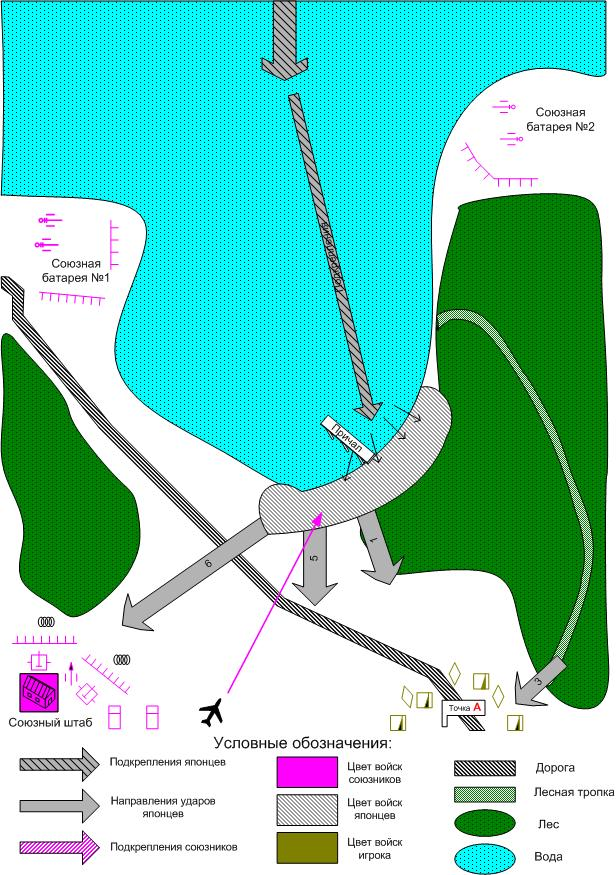

Graphics
Assets
Management
By {Arseniy.Nazarenko}
27 июня 2003
Бухта Лингаен, Филиппины.

Размер
карты:
Масштаб 8*8 патчей
[Скриптовый
ролик.
Миссия начинается боем в бухте между
японскими и американскими катерами. Транспортные суда японцев в сопровождении
катеров, под непрерывным обстрелом береговой артиллерии, прорываются к берегу и
начинают высадку десанта. Параллельно с этим происходит ожесточенный воздушный
бой и на берег высаживаются японские парашютисты. ]
Войска
игрока.
С какими
вступает:
M3 Stuart: 4 шт.
американская пехота 41: 4
шт.
[37mm ATG: 2 шт. ?]
Приданное:
Подкрепления:
Соглаcно Learning Curve, первая миссия – без вызываемых
подкреплений.
Войска союзного AI.
Артиллерия:
105mm M2A1, 37mm ATG, 127mm CG,
40mm Bofors AAG,
Пехота: американская пехота 41
Авиация: SBD Dauntless, F-4F3 - 1 Wildcat.
Море: Torpedo
boat.
Войска
противника (после скриптового ролика).
Танки: Ha-Go
Легкие боевые машины: Te-Ke, Ka-Tsu,
So-da.
Артиллерия: 20mm ATR, 75mm Type38, 105mm Type92, (??150mm Type96).
Авиация:
A6M2 Zero-sen, Ki-51, Ki-21.
Пехота: японская линейная пехота, японская
штурмовая пехота, парашютисты.
Море: Special boat,
Assolt Landing Airboat, Torpedo boat.
Какую информацию увидит игрок при выборе этой миссии, какой
бонус получит игрок по прохождению.
Миссия обязательна для прохождения. Бонус
– переход к следующей миссии.
Предотвращение высадки японцев в бухте
Лингаен. (Один из ключевых пунктов на Филиппинах, бухта Лингаен, атакована
японским десантом. Если их не сбросить в море, американская оборона на островах
будет быстро уничтожена. Остановите десант и
уничтожьте его.
Основное
задание.
Уничтожить десант
Подзадания.
1.
Не дайте
японцам овладеть к штабом
Последнее, самое массированное нападение
происходит в направлении союзного штаба.
2.
Полное
уничтожение десанта
Захватите причал.
Конец миссии
Прохождение
миссии.
[С
самого начала миссии игроку демонстрируются морские бои, артиллерийский обстрел
и воздушные схватки, которые ведут союзные игроку войска. Это позволит сразу
окунуть игрока в массовое сражение, не требуя от него умения управлять всеми
юнитами.]
Первые удары японцев по войскам игрока очень
незначительные, потерь нет. (стрелка 1). При бездействии игрока, Японцы нападают на союзную батарею №2
правого фланга и могут захватить ее. Батарея №1 левого фланга переносит огонь с
моря и плацдарма на поддержку атакуемой батареи №» или на ее подавление в случае
захвата. У игрока есть шанс помешать уничтожению батареи №2, если он начнет
действовать немедленно и в обход основных сил японцев, пройдя через лес, нанесет
удар по японцам. В противном случае батарея №2 будет уничтожена огнем батареи
№1.
Далее, если игрок бездействует и остается на своих
начальных позициях, то помимо незначительных постоянных лобовых атак (по одному
взводу пехоты) (по стрелке 1), японцы предпринимают обходной маневр через лес.
Пройдя по лесной тропке, пехота выходит игроку в тыл (2 сквода)(стрелка №3).
Потери игрока неизбежны, но не критичны.
Японцы предпринимают попытку атаковать батарею №1 и если
игрок не окажет поддержки, то с третьея -
четвертая атака окажется успешной, японцы овладеют батареей и нанесут
артиллерийский удар по войскам игрока и по штабу.
Когда при выдвижении сил игрока в сторону плацдарма, его
войска попадают в скриптовую зону вокруг япаонцев – союзная авиация совершает
налет, облегчающий уничтожение противника
(японцы не должны окапываться).Таким образом игрок может легко
расправится с остатками десанта на берегу.
Примечание:
Японцы после высадки постоянно получают подкрепления по
морю. В виде катеров и десантных транспортов.
[Союзные войска тоже постоянно получают новые катера
из-за левого края карты и на море идет беспрерывный бой с переменным успехом.
Иногда, прорвавшиеся в бухту союзные катера, топят и десантные транспорты
японцев.]
Провал миссии:
При
захвате штаба (что очень мало вероятно)
При
потере всех юнитов игрока